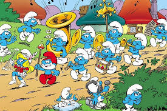

Smerfy (serial animowany)
Smerfy (ang. The Smurfs, fr. Les Schtroumpfs, 1981– 1989, 2018) – amerykańsko-belgijski serial animowany dla dzieci powstały na podstawie komiksów Smerfy autorstwa Peyo i stworzony przez studio Hanna-Barbera dla stacji NBC i również na BBC .
Fabuła
Serial, którego akcja rozgrywa się w średniowieczu, opowiada o przygodach niebieskich stworzeń zwanych Smerfami. Ich niebezpiecznym wrogiem jest zły czarnoksiężnik Gargamel, który wraz ze swoim kotem Klakierem i asystentem Nicponiem (od 6 serii) próbuje je złapać.
W sumie wyprodukowano 258 odcinków kreskówki, na które składa się 421 epizodów (niektóre 12-, inne 22-minutowe). W czasie produkcji „Smerfów” powstał także 16-odcinkowy serial „Przygody Piłita i Johana” (w którym niebieskie ludziki także biorą udział). Smerfy były wyświetlane w 30 krajach. Niektóre motywy muzyczne pojawiające się w serialu mają swoje źródło w muzyce poważnej(m.in. VIII Symfonia „Niedokończona” Franciszka Schuberta, Koncert fortepianowy nr 1 Franciszka Liszta, a także Symfonia nr 40 w g-moll W.A. Mozarta i W grocie Króla Gór Edwarda Griega).
Emisja
Serial zagościł na antenie 1. Programu TVP 15 listopada 1987 , a nadawanie go zakończyło się w 1999 W maju 2005 Telewizja Polska wznowiła nadawanie serialu w Programie 1. (w poniedziałki i we wtorki o godz. 19.00) od serii 5 (bez pierwszych jej odcinków). Po zakończeniu emisji (w której brakowało jednak wielu odcinków z serii 6., 7. i 9. oraz całej serii 8.), w lutym 2006 została ona w znacznej części powtórzona. Smerfy można było oglądać w poniedziałki i piątki o godzinie 19.00. Od września 2006 kreskówkę można obejrzeć w każdy piątek o godzinie 19.00. Od 3 listopada 2006 rozpoczęto emisję pierwszej serii, w większości z nowym dubbingiem. Mimo to wyemitowano 3 odcinki z tym znanym sprzed wielu lat. Potem pokazano drugą i trzecią serię z nowym dubbingiem. Następnie wyemitowano 4 serię (niektóre odcinki z nowym dubbingiem, inne ze starym). Od 27 marca 2009 Telewizja Polska wznowiła nadawanie serialu w Programie 1 od pierwszego odcinka, w piątki o 19.00 jednak po kilku miesiącach serial zakończył swoją emisję. Od 9 października 2010 serial powrócił do TVP1 w sobotniej wieczorynce o 19:00 i był emitowany do 11 czerwca 2011 . Od 7 sierpnia do 4 września 2011 serial był nadawany w każdą niedzielę o 13:15. Od 25 grudnia 2011 serial powrócił do TVP1 i był emitowany do 15 stycznia 2012 . Od 6 kwietnia 2012 serial powrócił do TVP1 i był nadawany do 3 maja 2012 . Od 6 lipca 2013 serial powrócił do TVP1 w sobotniej wieczorynce o 19:00 ponownie od pierwszego odcinka do 25 stycznia 2014 . Od 15 lutego 2014 emitowany jest w TVP ABC codziennie o 8.35, 11.45 i 19.00.Od 22 kwietnia 2013 serial pojawił się na kanale teleTOON+.